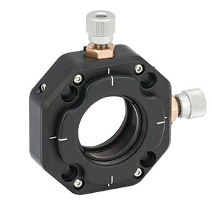
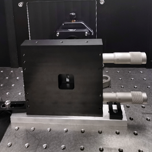

K2 TIRF component overview
A full list of all components of the K2 TIRF is shown below. The list is subdivided in main cube (I), excitation path (II), emission path (III), qgFocus (IV) and laser box (V).Please note that standard mirrors and mounts, posts, clamps, rails, cage rods, standard adapter plates and irises are not included in the component list.
{kind=link}
Main cube (I)
The objective, the sample stage and the dichroic filter cube are mounted to a solid metal cube, based on the miCube design.
If required, the cube can be mirrored and used with excitation coming from the left, if the appropriate (left-turning) filter cube is used.
If required, the cube can be mirrored and used with excitation coming from the left, if the appropriate (left-turning) filter cube is used.
| id | Title | Description | Image | Notes |
|---|---|---|---|---|
| 1 | (modified) miCube block | CNC milled - Technical drawing Modified dimensions and threaded holes to mount the piezo positioner on. Handy knob and magnets to keep door shut without screws. |
Possible improvement: decreasing the distance from excitation beam port to dichroic filter cube, such that also TIRF lenses with smaller focal length can be used, resulting in a bigger illuminated field-of-view | |
| 2 | XYZ stage | Smaract SLS-5252 linear stage with a MCS2 controller. |
 |
|
| 3 | Sample holder | CNC milled - Technical drawing Sample holder for standard coverslips (22x60mm, 26x76mm) with magnets to keep sample in place |
Smaract piezo stage is tared with respect to sample holder weight by adding a constant force spring during stage assembly. | |
| 4 | Objective | Nikon TIRF 1.49NA 60x objective |
 |
|
| 5 | Thermal insulation spacer | CNC-milled Technical drawing POM spacer with M25 x 0.75 internal and external threads for thermal insulation of the heated objective |
||
| 6 | Heating foil | Omega KHLVA-104/10 polyimide film flexible heater Wrapped around the objective and fixed with adhesive kapton foil. See Objective Heater Instructable |
Dip-in sensor to calibrate offset of objective temperature to sample temperature | |
| 7 | Temperature controller | Custom design based on Omron E5CC PID temperature controller Heats the polyimide film around the objective and senses temperature using PT100 sensors |
||
| 8 | Plexiglass housing | Protects sample and objective from dust and airflow and improves temperature stability. Including a LED ring for brightfield imaging | ||
| 9 | Dichroic mirror cube | Thorlabs - DFM1/M Magnetic hot-swappable dichroic mirror is placed inside. |
 |
|
| 10 | Dichroic mirror cube spacer | Custom made - Technical drawing |
||
| 11 | Dichroic mirror | Chroma - ZT405/488/561/640rpc-UF2 |
 |
|
| 12 | Neutral density filter | Thorlabs - NE60A-A Preventing unwanted back-reflections within the dichroic mirror cube. |
 |
|
| 13 | Connector for dichroic mirror and mirror | Thorlabs - C4W-CC |
 |
|
| 14 | 45° elliptical mirror | The fixed mirror ensures easy adjustment of position of the emission light on the camera by adjusting the two screws. |  |
Excitation path (II)
| id | Title | Description | Image | Notes |
|---|---|---|---|---|
| 1 | Breadboard | |||
| 1 | Fiber mount | |||
| 2 | Collimator | Thorlabs - Collimation lens AC254-050-A in CXY1 translating lens mount |
 | Collimates the input beam to a 1/e2 diameter of 6mm (for 488nm), the required input diameter for the piShaper. A shearing interferometer makes the collimation process easier. See Heintzmann, Practical Guide to Optical Alignment |
| 3 | Quarter-Wave plate | Thorlabs - AQWP05M-600 achromatic quarter-wave plate in PRM1 rotation mount |
||
| 4 | piShaper | AdlOptica - piShaper 6_6_VIS Transforms the gaussian illumination into a flat-top profile |
 |
Stehr, Stein et al. |
| 5 | 2.5x beam expander | Thorlabs - AC254-100-A 100mm and ACN254-040-A -40mm lenses in a cage system with CXY1 mounts and a KB25/M kinematic base Magnifies the beam diameter 2.5fold and can be easily swapped or removed due to its magnetic kinematic base. Raised up to 64.7mm beam height with standard adapter plates. |
||
| 6 | FRAP lens flip mount | FRAP lens to focus excitation light in the sample plane for bleaching experiments. |  |
7 | TIRF angle stage | Thorlabs - Motorized stage MTS25E/M bundle Motorized control over incident angle to change between TIRF, HILO and epifluorescence illumination |
 |
8 | TIRF angle cage assembly | Mounting mirror and lens onto one assembly allows to keep the focal point of the TIRF lens to overlap with the objective's back focal plane for all incident angles. |  |
9 | Cage assembly adapter plate | CNC-milled - Technical drawing Cage assembly is mounted onto the plate with with CP02B mounting brackets and raised to 64.7mm beam height. |
| 10 | TIRF lens | Edmund Optics - LENS ACH 25x250 VIS 0 Inked TIRF lens in CXY1 mount to focus excitation light on back-focal plane of objective. 250mm focal length. |
 |
Emission path (III)
| id | Title | Description | Image | Notes | 1 | Tube lens | 200 mm focal length. Cage system is mounted via Thorlabs AE4E6M thread adapter and LCP01/M cage plate. | Cage plate doubles as a mount for an alignment target. |
|---|---|---|---|---|
| 2 | Adjustable aperture | Custom made - Technical drawing with Newport SM-25 as micrometer drives The aperture is placed in the image plane and
restricts the image horizontally so up to three separate, spatially identical images can be displayed on a single camera. |
Cropping the image in the horizontal dimension provides a bit more wiggle room in the emission image splitting optics, which would otherwise be prone to cause vignetting/shading of the image. | |
| 3 | Mounting plate for adjustable aperture | Custom made - Technical drawing |
 | |
| 4 | 4f system | Thorlabs - 2" AC508-300-A lens in a LMXY2 mount
and three 1" AC254-300-A lenses in LMR1/M fixed lens mounts.
4f-system to gain enough space to include dichroic mirrors and filters for separating the color channels. |
Three individual lenses make it easy to ensure focusing of the same z-plane for the different wavelengths. | |
| 5 | Compact (dichroic) mirrors mounts |  |
Mounting the dichroic mirror mounts onto a kinematic base KB25/M makes the alignment process easier and allows swapping dichroic mirrors. | |
| 6 | Image splitter (dichroic) mirrors | Mirrors are glued centrally onto the mounts, dichroic mirrors at the edge, using two-component silicone glue which stays flexible. This prevents the introduction of strain on the dichros. | ||
| 7 | Emission filters | |||
| 7 | Camera | 2048-by-2048 pixels, with Alphacool Eiswand watercooling. | Prime BSI customer story |
qgFocus path (IV)
The quite good focus is our implementation of the pgFocus.
Alignment tips:
Alignment tips:
- Start with an aligned excitation laser path, open the zero aperture iris fully, remove the neutral density filter, the infrared TIRF lens and the objective
- Move the excitation laser into epifluorescence mode and make sure the infrared beam's spot overlaps with the excitation laser's spot on the focus lock coupling dichro
- Co-align the infrared laser to the excitation laser using the coupling dichro so that all laser beams exit the objective port centered and perpendicular to the optical table
- Insert the objective and the infrared TIRF lens, and mount a coverglass on immersion oil on the objective. Make sure the infrared laser beam is coming out of the objective collimated.
- Move the infrared laser into total internal reflection (TIR) by translating the stage. First try TIR glass-air interface, glass-water will be more difficult due to the smaller working range of TIR angles.
- A quick test whether the alignment is roughly correct can be performed by placing the IR viewing disk after the dovetail stage such that the incoming beam passes through the hole. The back-reflected beam will then be visible on the disk and it's x-y movement resulting from moving the sample in z can be followed
| id | Title | Description | Image | Notes |
|---|---|---|---|---|
| 1 | qgFocus device | 128-pixel resolution with 63.5um (h) x 55.5um (w) pixels in post-mountable housing with USB output port | ||
| 2 | Infrared laser | |||
| 3 | Zero aperture iris | To clean up the infrared laser output | ||
| 4 | TIRF lens (infrared) | Thorlabs - LA1908-780 lens in a CXY1 mount
Focuses the infrared laser onto the back focal plane of the objective |
||
| 5 | Neutral density filter | Thorlabs - NE13A-B
Attenuates the infrared laser (remove during alignment!) |
||
| 6 | Beamsplitter cube angle stage (infrared) | Thorlabs - CCM1-BS014/M cage-mounted beamsplitter cube Redirects reflected infrared laser towards line sensor |
||
| 6 | Dichroic mirror | Chroma - ZT775sp2-2p-UF1 on kinematic mirror mount Couples in the focus lock laser into the excitation path |
|
|
| 7 | Camera lens (infrared) | Thorlabs - LA1708-780 lens in a CXY1 mount
Focuses the infrared laser onto the line sensor |
||
| 8 | Bandpass filter | Thorlabs - FB800-40 |
||
| 9 | IR viewing disk | Thorlabs - VRC2D1 mounted in cage plate or small lens tube Indispensable for the alignment procedure |
Laser box and triggering (V)
| id | Title | Description | Image | Notes |
|---|---|---|---|---|
| 1 | Laser triggering | Custom made laser trigger box Documentation to follow |
||
| 2 | Laser box | Hübner Photonics - C-FLEX with AOM for the 561nm DPSSL laser 405nm (140mW), 488nm (200mW), 561nm (220mW) and 638nm (195mW) |
||
| 3 | Fixed frequency source | AA Opto Electronic - MODA110-B251k-304560
RF frequency driver for the acousto optical modulator (AOM) controlling the 561nm DPSSL laser |
||
| 4 | Single mode fiber | Qioptiq - kineFLEX-HPV-P-3-S-405..640-0.7-0.7-P0
Single mode polarization maintaining fiber and fiber coupler |
Accessories
| id | Title | Description | Image | Notes |
|---|---|---|---|---|
| 1 | Gustafsson alignment tool | CNC-milled Technical drawing See Abrahamsson et al. |
2 | Two-component glue frequency source | Picodent - Twinsil Easily removable flexible silicone glue |
3 | Shear plate | Thorlabs - SI100 For beam diameters of 5-10 mm. Great tool for collimating fiber output, as well as aligning the emission pathway in combination with the Gustafsson alignment tool. |